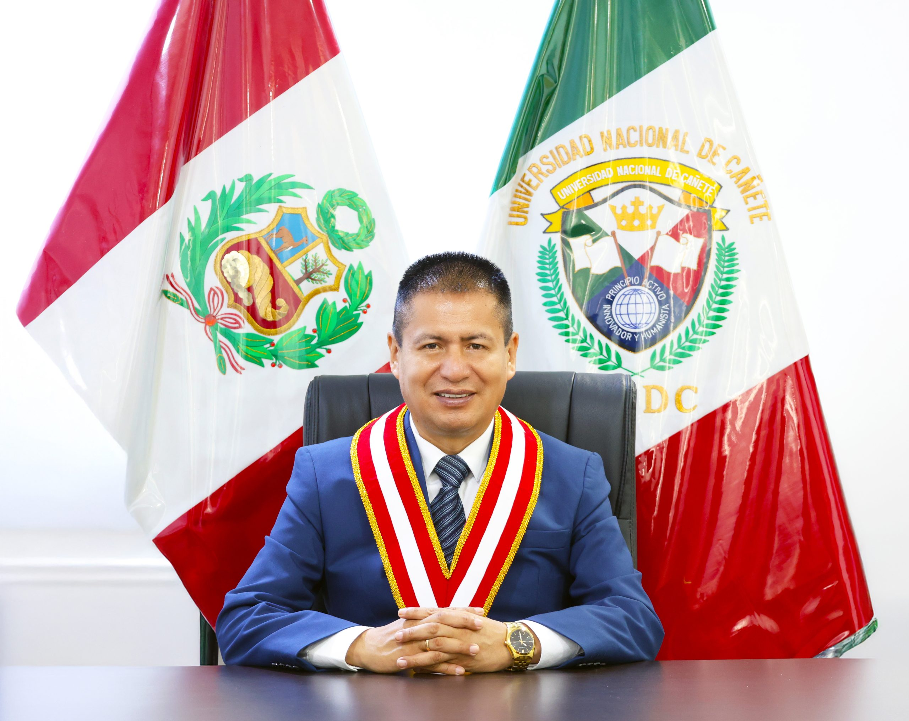

Ph.D. Dulio Oseda Gago
Rector
Dr. Manuel Alfredo Ñique Alvarez
Vicerrector Académico
Dra. Yrene Cecilia Uribe Hernández
Vicerrectora de Investigación
Dirección y gobierno universitario

Rector
Vicerrector Académico
Vicerrectora de Investigación